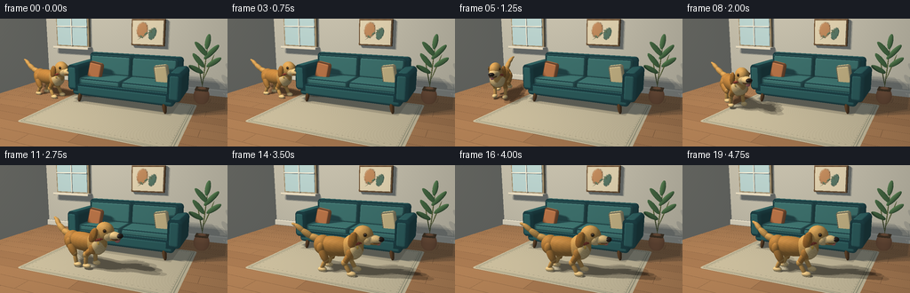
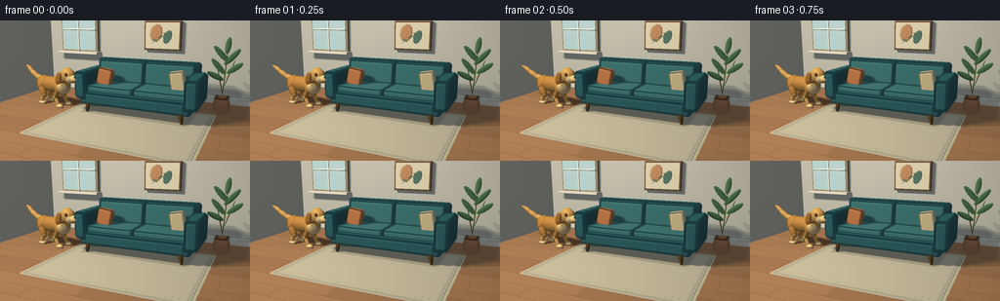

CODING AGENTS AS PIXEL WORLD MODELS
traex/GPT-6.1-Sol · dynamic_spatial_relationship_0001
点击播放 · 原生 RGB 像素
逐轮保存的候选
回放视频、检查图与代码变化。
每份候选均可单独播放。实际图片检查记录在下方工具轨迹中。
候选 01播放与检查图
点击播放 · 原生 RGB 像素


展开代码变化
--- 上一保存版本
+++ 本次保存版本
@@ -0,0 +1,401 @@
+"""A deterministic, purely NumPy/Pillow miniature 3-D animation renderer.
+No models, assets or rendering engines. Coordinates and motion are authored here.
+"""
+from pathlib import Path
+import math
+import numpy as np
+from PIL import Image
+import artifact_io
+
+ROOT = Path(__file__).resolve().parent
+W, H, SS = 256, 144, 3
+RW, RH = W * SS, H * SS
+CAM = np.array([3.1, 2.7, 7.7], dtype=np.float32)
+TARGET = np.array([-.3, .7, .1], dtype=np.float32)
+F = TARGET - CAM; F /= np.linalg.norm(F)
+R = np.cross(F, [0, 1, 0]); R /= np.linalg.norm(R)
+U = np.cross(R, F)
+yy, xx = np.mgrid[:RH, :RW]
+D = F + ((xx + .5 - RW/2) / (305*SS))[..., None]*R - ((yy + .5 - RH/2)/(305*SS))[..., None]*U
+D = D.astype(np.float32); D /= np.linalg.norm(D, axis=-1)[..., None]
+LIGHT = np.array([-3.5, 6., 4.5], dtype=np.float32)
+LIGHT_SAMPLES = [LIGHT + np.array(o,dtype=np.float32) for o in [(-.85,0,-.55),(.85,0,.55),(-.35,.5,.85),(.35,-.5,-.85)]]
+
+
+def rot(axis, a):
+ c,s = math.cos(a),math.sin(a)
+ if axis == 'y': return np.array([[c,0,-s],[0,1,0],[s,0,c]],np.float32)
+ if axis == 'z': return np.array([[c,-s,0],[s,c,0],[0,0,1]],np.float32)
+ return np.array([[1,0,0],[0,c,-s],[0,s,c]],np.float32)
+
+
+def shape(kind, center, size, color, rotation=None, radius=.06, material='matte', shadow=True):
+ return {'kind':kind,'c':np.array(center,np.float32),'s':np.array(size,np.float32),
+ 'r': np.eye(3,dtype=np.float32) if rotation is None else rotation,
+ 'color':np.array(color,np.float32)/255, 'round':radius,
+ 'material':material,'shadow':shadow}
+
+
+def ell(c,s,col,**kw): return shape('ell',c,s,col,**kw)
+def box(c,s,col,**kw): return shape('box',c,s,col,**kw)
+def link(a,b,width,col,**kw):
+ a,b=np.array(a,float),np.array(b,float)
+ v=b-a; vlen=np.linalg.norm(v); v/=vlen
+ axis=np.array([0,0,1.]) if abs(v[2])<.9 else np.array([0,1.,0])
+ x=np.cross(v,axis); x/=np.linalg.norm(x); z=np.cross(x,v)
+ return ell((a+b)/2,[width,vlen/2+width,width],col,rotation=np.stack([x,v,z],axis=1).astype(np.float32),**kw)
+
+
+def bbox(o):
+ ext=o['s']; corners=np.array([[a,b,c] for a in [-1,1] for b in [-1,1] for c in [-1,1]],np.float32)*ext
+ pts=corners@o['r'].T+o['c']-CAM
+ dep=pts@F
+ if np.any(dep<=.1): return 0,RW,0,RH
+ xp=RW/2+305*SS*(pts@R)/dep; yp=RH/2-305*SS*(pts@U)/dep
+ return max(0,int(xp.min())-2),min(RW,int(xp.max())+3),max(0,int(yp.min())-2),min(RH,int(yp.max())+3)
+
+
+def intersect(o, origins, dirs, shadow=False):
+ q=(origins-o['c'])@o['r']; v=dirs@o['r']
+ q=np.broadcast_to(q,v.shape)
+ if o['kind']=='ell':
+ p=q/o['s']; dv=v/o['s']
+ a=np.sum(dv*dv,axis=-1); b=np.sum(p*dv,axis=-1); c=np.sum(p*p,axis=-1)-1
+ disc=b*b-a*c
+ root=np.sqrt(np.maximum(disc,0)); t=(-b-root)/a
+ valid=(disc>=0)&(t>.002)
+ return np.where(valid,t,np.inf)
+ # Slab bound, followed by exact rounded cuboid signed-distance tracing.
+ safe=np.where(abs(v)<1e-8,1e-8,v)
+ a=(-o['s']-q)/safe; b=(o['s']-q)/safe
+ lo=np.maximum(np.min(np.stack([a,b]),axis=0).max(axis=-1),.002)
+ hi=np.max(np.stack([a,b]),axis=0).min(axis=-1)
+ valid=hi>=lo
+ if shadow:
+ return np.where(valid,lo,np.inf)
+ t=lo.copy(); active=valid.copy(); hit=np.zeros(t.shape,bool)
+ core=o['s']-o['round']
+ for _ in range(36):
+ if not active.any(): break
+ inds=np.flatnonzero(active)
+ points=q.reshape(-1,3)[inds]+v.reshape(-1,3)[inds]*t.ravel()[inds,None]
+ qq=np.abs(points)-core
+ dist=np.linalg.norm(np.maximum(qq,0),axis=-1)+np.minimum(np.max(qq,axis=-1),0)-o['round']
+ reached=dist<.0006
+ hit.ravel()[inds[reached]]=True
+ t.ravel()[inds]+=np.maximum(dist,.0003)
+ active.ravel()[inds[reached]]=False
+ active &= t<hi+.001
+ return np.where(hit,t,np.inf)
+
+
+def normal(o, p):
+ q=(p-o['c'])@o['r']
+ if o['kind']=='ell': n=q/(o['s']*o['s'])
+ else:
+ d=np.abs(q)-(o['s']-o['round'])
+ n=np.sign(q)*np.maximum(d,0)
+ flat=np.linalg.norm(n,axis=-1)<1e-7
+ if flat.any():
+ axis=np.argmax(d[flat],axis=-1); v=np.zeros((flat.sum(),3),np.float32)
+ v[np.arange(len(v)),axis]=np.sign(q[flat][np.arange(len(v)),axis]); n[flat]=v
+ n=n@o['r'].T
+ return n/(np.linalg.norm(n,axis=-1)[...,None]+1e-10)
+
+
+def texture(o,p):
+ base=np.broadcast_to(o['color'],p.shape).copy()
+ m=o['material']
+ if m=='fur':
+ q=(p-o['c'])@o['r']
+ fine=np.sin(q[...,0]*180+np.sin(q[...,1]*115)*2+q[...,2]*140)
+ fuzz=np.sin(p[...,0]*39+p[...,1]*53)*np.sin(p[...,2]*68-p[...,1]*44)
+ base *= (1+.034*fine+.028*fuzz)[...,None]
+ elif m in ('fabric','rug'):
+ weave=np.sin(p[...,0]*310)*np.sin(p[...,1]*390+p[...,2]*330)
+ base *= (1+.027*weave)[...,None]
+ elif m=='wood':
+ grain=np.sin(p[...,0]*22+p[...,2]*8+2*np.sin(p[...,1]*7))
+ base *= (1+.055*grain)[...,None]
+ return np.clip(base,0,1)
+
+
+def shade(p,n,albedo,visibility=1.,material='matte'):
+ l=LIGHT-p; l/=np.linalg.norm(l,axis=-1)[...,None]
+ diffuse=np.maximum(np.sum(n*l,axis=-1),0)
+ # Broad diffuse daylight, warm key, cool environmental fill.
+ amb=.40+.12*np.maximum(n[...,1],0)+.09*np.maximum(n[...,2],0)
+ vis=np.asarray(visibility)
+ col=albedo*(amb[...,None]*np.array([.92,.98,1.03]) + (diffuse*(.57*vis))[...,None]*np.array([1.08,.98,.83]))
+ view=CAM-p; view/=np.linalg.norm(view,axis=-1)[...,None]
+ halfv=view+l; halfv/=np.linalg.norm(halfv,axis=-1)[...,None]
+ spec=np.maximum(np.sum(n*halfv,axis=-1),0)**(70 if material=='gloss' else 26)
+ col += (spec*vis*(.35 if material=='gloss' else .035))[...,None]
+ return np.clip(col,0,1)
+
+
+def visibility(p,n,objects,samples=LIGHT_SAMPLES):
+ total=np.zeros(p.shape[:-1],np.float32)
+ origin=p+n*.008
+ for sample in samples:
+ vec=sample-origin; dist=np.linalg.norm(vec,axis=-1); vec/=dist[...,None]
+ blocked=np.zeros(dist.shape,bool)
+ for o in objects:
+ if not o['shadow']: continue
+ # conservative bounding-sphere rejection before intersection
+ cc=o['c']-origin; along=np.sum(cc*vec,axis=-1)
+ radius=np.linalg.norm(o['s'])
+ close=np.sum(cc*cc,axis=-1)-along*along<radius*radius
+ possible=close&(along>-radius)&(along<dist+radius)&(~blocked)
+ if not possible.any(): continue
+ t=intersect(o,origin[possible],vec[possible],shadow=True)
+ blocked[possible] |= t<dist[possible]
+ total+=~blocked
+ return total/len(samples)
+
+
+def floor_color(p):
+ x,z=p[...,0],p[...,2]
+ row=np.floor((z+8)/.48)
+ along=x+(row%3)*1.1
+ plank=np.floor((along+12)/2.6)
+ seed=np.sin(row*19.17+plank*31.37)*43758.5453
+ variation=(seed-np.floor(seed))-.5
+ grain=np.sin(z*170+np.sin(x*1.8)*3)+.5*np.sin(z*370+x*2)
+ c=np.stack([.64+.048*variation+.012*grain,.455+.04*variation+.01*grain,.305+.027*variation+.008*grain],axis=-1)
+ seam=(np.mod(z+8,.48)<.010)|(np.mod(along+12,2.6)<.009)
+ c[seam]*=.72
+ # Woven ivory rug with a subtle rounded rectangular, double-line border.
+ qx=np.abs(x-.06)-2.11+.11; qz=np.abs(z-.85)-1.71+.11
+ sdf=np.sqrt(np.maximum(qx,0)**2+np.maximum(qz,0)**2)+np.minimum(np.maximum(qx,qz),0)-.11
+ rug=sdf<0
+ weave=.013*np.sin(x*450)*np.sin(z*480)+.01*np.sin(x*235+z*319)
+ rc=np.stack([.775+weave,.733+weave,.625+weave],axis=-1)
+ border=((sdf<-.065)&(sdf>-.09))|((sdf<-.125)&(sdf>-.142))
+ rc[border]*=np.array([.74,.78,.78])
+ # Tiny, quiet alternating diamonds in the wide border.
+ band=(sdf<-.155)&(sdf>-.29)
+ pat=(abs(np.mod(x*7+.5,1)-.5)+abs(np.mod(z*7+.5,1)-.5))<.19
+ rc[band&pat]*=.88
+ c[rug]=rc[rug]
+ return c
+
+
+def build_scene():
+ objs=[]
+ add=objs.append
+ # Wall skirting and a softly glowing divided window.
+ add(box([0,.115,-2.18],[5,.115,.055],[219,213,198],radius=.025))
+ add(box([-3.17,2.37,-2.14],[.79,.88,.07],[162,142,109],radius=.018,material='wood'))
+ add(box([-3.17,2.37,-2.052],[.72,.81,.014],[184,215,220],radius=.002,shadow=False))
+ add(box([-3.17,2.36,-2.025],[.023,.815,.025],[243,239,224],radius=.007))
+ add(box([-3.17,2.34,-2.023],[.73,.024,.025],[243,239,224],radius=.007))
+ add(box([-3.17,1.47,-2.03],[.85,.045,.17],[235,225,204],radius=.016))
+ # Small graphic, sculptural botanical print over the sofa.
+ add(box([.1,2.16,-2.135],[.64,.49,.065],[107,78,50],radius=.02,material='wood'))
+ add(box([.1,2.16,-2.06],[.589,.437,.012],[230,216,185],radius=.002))
+ add(ell([-.10,2.25,-2.039],[.20,.27,.008],[193,135,89],rotation=rot('z',-.24),shadow=False))
+ add(ell([.29,2.12,-2.036],[.13,.22,.008],[80,113,98],rotation=rot('z',-.38),shadow=False))
+ add(link([-.25,1.9,-2.025],[.42,2.34,-2.025],.009,[104,112,83],shadow=False))
+ for x,y,a in [(-.12,2.01,-.7),(.05,2.13,.7),(.22,2.21,-.7)]:
+ add(ell([x,y,-2.012],[.07,.026,.007],[99,122,94],rotation=rot('z',a),shadow=False))
+ # Sofa: walnut legs, upholstered frame, separate seat/back cushions and piping.
+ teal=[43,96,99]; seat=[59,117,116]; back=[53,107,107]
+ for x in [-1.43,1.43]:
+ for z in [-.94,.35]:
+ add(link([x,.055,z],[x*.96,.35,z-.015],.065,[99,67,40],material='wood'))
+ add(box([0,.415,-.32],[1.67,.19,.72],teal,radius=.105,material='fabric'))
+ add(box([0,.99,-.93],[1.65,.50,.16],teal,radius=.115,material='fabric'))
+ for x in [-.77,.77]:
+ add(box([x,.683,-.30],[.753,.105,.594],seat,radius=.082,material='fabric'))
+ add(box([x,1.087,-.732],[.758,.35,.125],back,rotation=rot('x',-.12),radius=.095,material='fabric'))
+ add(link([x-.63,.656,.285],[x+.63,.656,.285],.009,[92,140,134],material='fabric',shadow=False))
+ for x in [-1.65,1.65]:
+ add(box([x,.792,-.31],[.205,.422,.72],teal,radius=.13,material='fabric'))
+ add(link([x,1.201,-.84],[x,1.201,.21],.011,[78,125,122],material='fabric',shadow=False))
+ add(box([-1.09,.978,-.19],[.257,.286,.105],[190,114,69],rotation=rot('z',-.16)@rot('x',-.12),radius=.095,material='fabric'))
+ add(box([1.13,1.003,-.31],[.225,.30,.11],[217,196,145],rotation=rot('z',.18),radius=.085,material='fabric'))
+ # Plant, visible as an airy silhouette at the right edge.
+ add(ell([2.25,.25,-1.11],[.245,.29,.245],[172,112,77]))
+ add(box([2.25,.47,-1.11],[.20,.025,.20],[95,70,47],radius=.02))
+ for a,b in [([2.25,.48,-1.11],[2.32,1.85,-1.1]),([2.25,.6,-1.11],[2.04,1.43,-1.15]),([2.29,.83,-1.1],[2.53,1.58,-1.1])]:
+ add(link(a,b,.016,[90,102,56]))
+ for a,b in [([2.3,1.58,-1.1],[2.00,1.91,-1.04]),([2.3,1.5,-1.1],[2.59,1.83,-1.14]),([2.22,1.23,-1.13],[1.95,1.54,-1.08]),([2.40,1.25,-1.1],[2.68,1.47,-1.04]),([2.30,1.83,-1.1],[2.33,2.13,-1.14]),([2.18,1.03,-1.09],[1.88,1.19,-.99])]:
+ mid=(np.array(a)+b)/2
+ o=link(a,b,.080,[67,106,66]);o['s'][2]=.032;add(o)
+ return objs
+
+
+def static_render(objects):
+ dep=np.full((RH,RW),np.inf,np.float32)
+ points=np.zeros((RH,RW,3),np.float32); norms=points.copy(); alb=points.copy()
+ mat=np.zeros((RH,RW),np.int32)
+ # Infinite room planes, analytically textured.
+ for axis,value,n,col in [(1,0,[0,1,0],None),(2,-2.25,[0,0,1],[.76,.747,.696]),(0,-4.6,[1,0,0],[.73,.72,.675])]:
+ t=(value-CAM[axis])/D[...,axis]
+ valid=(t>.0)&(t<dep)
+ p=CAM+D*t[...,None]
+ dep[valid]=t[valid]; points[valid]=p[valid];norms[valid]=n
+ if col is None:
+ alb[valid]=floor_color(p[valid]);mat[valid]=1
+ else:
+ tone=np.sin(p[...,0]*51+p[...,1]*49+p[...,2]*38)*.002
+ c=np.array(col)+tone[...,None];alb[valid]=c[valid];mat[valid]=2
+ for j,o in enumerate(objects):
+ x0,x1,y0,y1=bbox(o)
+ if x1<=x0 or y1<=y0: continue
+ ray=D[y0:y1,x0:x1];t=intersect(o,CAM,ray)
+ z=dep[y0:y1,x0:x1];valid=t<z
+ if not valid.any():continue
+ p=CAM+ray[valid]*t[valid,None]
+ z[valid]=t[valid];points[y0:y1,x0:x1][valid]=p
+ norms[y0:y1,x0:x1][valid]=normal(o,p)
+ alb[y0:y1,x0:x1][valid]=texture(o,p)
+ mat[y0:y1,x0:x1][valid]=j+3
+ print('Static geometry ready; soft area lighting...',flush=True)
+ flatp=points.reshape(-1,3);flatn=norms.reshape(-1,3)
+ vis=visibility(flatp,flatn,objects).reshape(RH,RW)
+ rgb=shade(points,norms,alb,vis)
+ # Warm reflected light under the upholstery; subtle contact occlusion.
+ floor=mat==1
+ near=(np.abs(points[...,0])<1.62)&(points[...,2]>-1.03)&(points[...,2]<.46)&floor
+ rgb[near]*=.86
+ return dep,points,norms,mat,rgb
+
+
+def dog_objects(frame):
+ # Hold, bound around the left arm, cross in front, then stand and wag.
+ progress=np.clip((frame-3)/11,0,1)
+ ease=progress*progress*(3-2*progress)
+ controls=np.array([[-2.80,.10],[-2.70,.96],[-1.08,1.70],[.35,1.70]])
+ t=ease;uv=(1-t)**3*controls[0]+3*(1-t)**2*t*controls[1]+3*(1-t)*t*t*controls[2]+t**3*controls[3]
+ tangent=3*(1-t)**2*(controls[1]-controls[0])+6*(1-t)*t*(controls[2]-controls[1])+3*t*t*(controls[3]-controls[2])
+ moving=3<frame<14
+ strength=math.sin(math.pi*progress)**.45 if moving else 0.
+ phase=(frame-3)*1.95
+ bob=strength*(.048*math.sin(phase*2)+.025)
+ angle=math.atan2(tangent[1],tangent[0])
+ if frame<=3:angle=.20
+ elif frame==4:angle=.70
+ turn=rot('y',angle)
+ center=np.array([uv[0],bob,uv[1]],np.float32)
+ objs=[]
+ gold=[188,126,57];lightgold=[211,155,80];cream=[236,197,131];earcolor=[166,105,45]
+ def add(o):
+ o['c']=turn@o['c']+center; o['r']=turn@o['r'];objs.append(o)
+ def E(c,s,col,**kw):add(ell(c,s,col,material=kw.pop('material','fur'),**kw))
+ def L(a,b,w,col,**kw):add(link(a,b,w,col,material=kw.pop('material','fur'),**kw))
+ # Far-side legs precede body in construction; the z buffer handles true occlusion.
+ for side in [-1,1]:
+ for front in [False,True]:
+ hipx=.39 if front else -.42
+ ph=phase+(0 if front else math.pi)+(.64 if side<0 else 0)
+ footx=hipx+strength*.28*math.cos(ph)
+ footy=.052+strength*.24*max(0,math.sin(ph))
+ start=np.array([hipx,.59 if front else .61,side*.18])
+ end=np.array([footx,footy,side*.19])
+ d=end-start;dist=np.linalg.norm(d);length1=.315;length2=.305
+ if dist>length1+length2-.002:
+ end=start+d*(length1+length2-.002)/dist;d=end-start;dist=np.linalg.norm(d)
+ u=d/dist;mid=(length1**2-length2**2+dist**2)/(2*dist)
+ height=math.sqrt(max(0,length1**2-mid**2))
+ perp=np.array([-u[1],u[0],0]);perp/=np.linalg.norm(perp)
+ knee=start+u*mid+perp*height*(-1 if front else 1)
+ E(start,[.115,.16,.10],gold)
+ L(start,knee,.079 if front else .104,gold)
+ E(knee,[.081,.087,.078],lightgold)
+ L(knee,end,.057,lightgold)
+ E(end+[.035,0,0],[.122,.064,.084],cream)
+ # Paw toe grooves.
+ for zoff in [-.025,.025]:
+ L(end+[.083,.030,zoff],end+[.11,.022,zoff],.004,[157,109,62],shadow=False)
+ E([-.08,.66,0],[.62,.253,.235],gold)
+ E([-.46,.655,0],[.24,.26,.235],gold)
+ E([.38,.69,0],[.275,.32,.25],lightgold)
+ E([.46,.66,.008],[.19,.252,.255],cream)
+ E([.49,.86,0],[.19,.285,.19],lightgold,rotation=rot('z',-.28))
+ # Real collar band made of small ellipsoidal segments around the neck.
+ for a in np.linspace(0,2*math.pi,18,endpoint=False):
+ E([.523+.145*math.cos(a),.832+.052*math.cos(a),.188*math.sin(a)],[.035,.038,.041],[153,66,48],material='matte')
+ E([.577,.761,.202],[.033,.043,.010],[211,165,66],material='gloss')
+ headbob=strength*.025*math.sin(phase-.4)
+ E([.645,1.028+headbob,0],[.257,.239,.188],lightgold)
+ E([.768,.948+headbob,0],[.17,.158,.166],cream)
+ E([.903,.945+headbob,0],[.225,.111,.132],cream)
+ E([.912,.875+headbob,0],[.166,.055,.111],gold)
+ # A slightly open mouth and small pink tongue while running.
+ gape=.018+.018*strength
+ E([.953,.891+headbob,0],[.153,gape,.122],[66,39,25],material='matte')
+ E([1.014,.861+headbob-.008*strength,.006],[.077,.041+.029*strength,.064],[204,120,114],rotation=rot('z',-.18),material='matte')
+ E([1.09,.967+headbob,0],[.075,.061,.092],[39,32,28],material='gloss')
+ E([1.104,.987+headbob,.047],[.017,.008,.016],[114,104,88],material='gloss',shadow=False)
+ for side in [-1,1]:
+ z=side*.163
+ E([.747,1.08+headbob,z],[.051,.050,.027],[89,60,30])
+ E([.758,1.083+headbob,z+side*.015],[.027,.032,.018],[27,23,19],material='gloss')
+ E([.764,1.095+headbob,z+side*.030],[.007,.009,.004],[250,240,214],material='gloss',shadow=False)
+ # Long, thick floppy ears swing back as the dog bounds.
+ earangle=side*.09+strength*.26*math.sin(phase-.8)
+ E([.455-.034*strength, .921+headbob+.028*strength*math.sin(phase),side*.205], [.115,.222,.066],earcolor,rotation=rot('z',-.15-earangle))
+ E([.472,.982+headbob,side*.257],[.069,.137,.014],[179,117,48],rotation=rot('z',-.12-earangle),shadow=False)
+ # A curved, furry retriever tail, tapered continuously and wagging in depth.
+ wag=.16*math.sin(frame*.95)
+ tailpoints=[[-.58,.79,0],[-.78,.85,.02+wag*.2],[-.98,.995,.05+wag*.55],[-1.15,1.13,.04+wag],[-1.26,1.17, .03+wag*1.2]]
+ for j in range(len(tailpoints)-1):L(tailpoints[j],tailpoints[j+1],[.095,.087,.069,.039][j],lightgold)
+ # Small matching tufts soften the chest and tail silhouette.
+ for j in range(5):
+ z=(j-2)*.065
+ L([.39,.47,z],[.31+.025*math.cos(j),.415,z],.027,cream)
+ return objs
+
+
+def render_frame(frame, static,scene):
+ staticdep,pstatic,nstatic,matstatic,rgbstatic=static
+ depth=staticdep.copy(); rgb=rgbstatic.copy()
+ dog=dog_objects(frame)
+ # Moving area-light shadow on the floor/rug, including faint contact shadow.
+ floor=matstatic==1
+ pts=pstatic[floor];n=nstatic[floor]
+ # Shadow silhouette is evaluated analytically, not a sliding screen-space sprite.
+ vis=visibility(pts,n,dog)
+ influence=.40+.60*vis
+ rgb[floor]*=influence[...,None]
+ owner=np.full((RH,RW),-1,np.int16)
+ for j,o in enumerate(dog):
+ x0,x1,y0,y1=bbox(o)
+ if x1<=x0 or y1<=y0:continue
+ rays=D[y0:y1,x0:x1];t=intersect(o,CAM,rays);z=depth[y0:y1,x0:x1]
+ valid=t<z
+ z[valid]=t[valid];owner[y0:y1,x0:x1][valid]=j
+ # Shade the exact visible surface and cast shadows from ears, muzzle, and legs.
+ active=owner>=0
+ ys,xs=np.nonzero(active)
+ points=CAM+D[active]*depth[active,None]
+ normals=np.zeros_like(points);colors=np.zeros_like(points)
+ ids=owner[active];gloss=np.zeros(len(points),bool)
+ for j,o in enumerate(dog):
+ ix=ids==j
+ if not ix.any():continue
+ normals[ix]=normal(o,points[ix]);colors[ix]=texture(o,points[ix]);gloss[ix]=o['material']=='gloss'
+ vis=visibility(points,normals,dog+scene)
+ shaded=shade(points,normals,colors,vis)
+ if gloss.any():shaded[gloss]=shade(points[gloss],normals[gloss],colors[gloss],vis[gloss],material='gloss')
+ rgb[active]=shaded
+ # Gentle display curve and a restrained photographic corner falloff.
+ vignette=1-.08*((xx-RW*.48)/(RW*.75))**2-.055*((yy-RH*.42)/(RH*.8))**2
+ rgb=np.clip(rgb*vignette[...,None],0,1)
+ rgb=rgb**.90
+ image=Image.fromarray(np.round(rgb*255).astype(np.uint8),'RGB')
+ return np.asarray(image.resize((W,H),Image.Resampling.LANCZOS))
+
+
+def main():
+ scene=build_scene();static=static_render(scene)
+ frames=[]
+ for i in range(20):
+ frames.append(render_frame(i,static,scene))
+ print(f'Rendered {i+1}/20',flush=True)
+ artifact_io.save(np.stack(frames),ROOT)
+ print('Saved RGB frames, pixels.npz and index.html.',flush=True)
+
+if __name__=='__main__':main()
可观测工具轨迹
实际执行的命令与返回图片。
命令 1exit 0
/bin/bash -lc 'ls -la && cat prompt.txt && cat GENERATION_RULES.md && cat task_spec.json'
命令 2exit 0
/bin/bash -lc "cat artifact_io.py && cat player_template.html && python - <<'PY'
import PIL,numpy
print('PIL',PIL.__version__)
PY"命令 3exit 0
/bin/bash -lc "python - <<'PY' import numpy as np C=np.array([3.1,2.7,7.7]); target=np.array([-.3,.7,.1]);F=target-C;F/=np.linalg.norm(F);R=np.cross(F,[0,1,0]);R/=np.linalg.norm(R);U=np.cross(R,F) for p in [[-3.4,.7,.1],[-2.55,.5,.1],[-1.78,.8,.1],[-1.7,1,-.5],[1.7,1,-.5],[.25,.5,1.6],[2.4,2,-1],[0,2.4,-2.05]]: d=np.array(p)-C;z=d@F;print(p,np.array([128+305*d@R/z,72-305*d@U/z])) PY"
命令 4exit 1
/bin/bash -lc "cat > generate.py <<'PY'
\"\"\"A deterministic, purely NumPy/Pillow miniature 3-D animation renderer.
No models, assets or rendering engines. Coordinates and motion are authored here.
\"\"\"
from pathlib import Path
import math
import numpy as np
from PIL import Image
import artifact_io
ROOT = Path(__file__).resolve().parent
W, H, SS = 256, 144, 3
RW, RH = W * SS, H * SS
CAM = np.array([3.1, 2.7, 7.7], dtype=np.float32)
TARGET = np.array([-.3, .7, .1], dtype=np.float32)
F = TARGET - CAM; F /= np.linalg.norm(F)
R = np.cross(F, [0, 1, 0]); R /= np.linalg.norm(R)
U = np.cross(R, F)
yy, xx = np.mgrid[:RH, :RW]
D = F + ((xx + .5 - RW/2) / (305*SS))[..., None]*R - ((yy + .5 - RH/2)/(305*SS))[..., None]*U
D = D.astype(np.float32); D /= np.linalg.norm(D, axis=-1)[..., None]
LIGHT = np.array([-3.5, 6., 4.5], dtype=np.float32)
LIGHT_SAMPLES = [LIGHT + np.array(o,dtype=np.float32) for o in [(-.85,0,-.55),(.85,0,.55),(-.35,.5,.85),(.35,-.5,-.85)]]
def rot(axis, a):
c,s = math.cos(a),math.sin(a)
if axis == 'y': return np.array([[c,0,-s],[0,1,0],[s,0,c]],np.float32)
if axis == 'z': return np.array([[c,-s,0],[s,c,0],[0,0,1]],np.float32)
return np.array([[1,0,0],[0,c,-s],[0,s,c]],np.float32)
def shape(kind, center, size, color, rotation=None, radius=.06, material='matte', shadow=True):
return {'kind':kind,'c':np.array(center,np.float32),'s':np.array(size,np.float32),
'r': np.eye(3,dtype=np.float32) if rotation is None else rotation,
'color':np.array(color,np.float32)/255, 'round':radius,
'material':material,'shadow':shadow}
def ell(c,s,col,**kw): return shape('ell',c,s,col,**kw)
def box(c,s,col,**kw): return shape('box',c,s,col,**kw)
def link(a,b,width,col,**kw):
a,b=np.array(a,float),np.array(b,float)
v=b-a; vlen=np.linalg.norm(v); v/=vlen
axis=np.array([0,0,1.]) if abs(v[2])<.9 else np.array([0,1.,0])
x=np.cross(v,axis); x/=np.linalg.norm(x); z=np.cross(x,v)
return ell((a+b)/2,[width,vlen/2+width,width],col,rotation=np.stack([x,v,z],axis=1).astype(np.float32),**kw)
def bbox(o):
ext=o['s']; corners=np.array([[a,b,c] for a in [-1,1] for b in [-1,1] for c in [-1,1]],np.float32)*ext
pts=corners@o['r'].T+o['c']-CAM
dep=pts@F
if np.any(dep<=.1): return 0,RW,0,RH
xp=RW/2+305*SS*(pts@R)/dep; yp=RH/2-305*SS*(pts@U)/dep
return max(0,int(xp.min())-2),min(RW,int(xp.max())+3),max(0,int(yp.min())-2),min(RH,int(yp.max())+3)
def intersect(o, origins, dirs, shadow=False):
q=(origins-o['c'])@o['r']; v=dirs@o['r']
if o['kind']=='ell':
p=q/o['s']; dv=v/o['s']
a=np.sum(dv*dv,axis=-1); b=np.sum(p*dv,axis=-1); c=np.sum(p*p,axis=-1)-1
disc=b*b-a*c
root=np.sqrt(np.maximum(disc,0)); t=(-b-root)/a
valid=(disc>=0)&(t>.002)
return np.where(valid,t,np.inf)
# Slab bound, followed by exact rounded cuboid signed-distance tracing.
safe=np.where(abs(v)<1e-8,1e-8,v)
a=(-o['s']-q)/safe; b=(o['s']-q)/safe
lo=np.maximum(np.min(np.stack([a,b]),axis=0).max(axis=-1),.002)
hi=np.max(np.stack([a,b]),axis=0).min(axis=-1)
valid=hi>=lo
if shadow:
return np.where(valid,lo,np.inf)
t=lo.copy(); active=valid.copy(); hit=np.zeros(t.shape,bool)
core=o['s']-o['round']
for _ in range(36):
if not active.any(): break
inds=np.flatnonzero(active)
points=q.reshape(-1,3)[inds]+v.reshape(-1,3)[inds]*t.ravel()[inds,None]
qq=np.abs(points)-core
dist=np.linalg.norm(np.maximum(qq,0),axis=-1)+np.minimum(np.max(qq,axis=-1),0)-o['round']
reached=dist<.0006
hit.ravel()[inds[reached]]=True
t.ravel()[inds]+=np.maximum(dist,.0003)
active.ravel()[inds[reached]]=False
active &= t<hi+.001
return np.where(hit,t,np.inf)
def normal(o, p):
q=(p-o['c'])@o['r']
if o['kind']=='ell': n=q/(o['s']*o['s'])
else:
d=np.abs(q)-(o['s']-o['round'])
n=np.sign(q)*np.maximum(d,0)
flat=np.linalg.norm(n,axis=-1)<1e-7
if flat.any():
axis=np.argmax(d[flat],axis=-1); v=np.zeros((flat.sum(),3),np.float32)
v[np.arange(len(v)),axis]=np.sign(q[flat][np.arange(len(v)),axis]); n[flat]=v
n=n@o['r'].T
return n/(np.linalg.norm(n,axis=-1)[...,None]+1e-10)
def texture(o,p):
base=np.broadcast_to(o['color'],p.shape).copy()
m=o['material']
if m=='fur':
q=(p-o['c'])@o['r']
fine=np.sin(q[...,0]*180+np.sin(q[...,1]*115)*2+q[...,2]*140)
fuzz=np.sin(p[...,0]*39+p[...,1]*53)*np.sin(p[...,2]*68-p[...,1]*44)
base *= (1+.034*fine+.028*fuzz)[...,None]
elif m in ('fabric','rug'):
weave=np.sin(p[...,0]*310)*np.sin(p[...,1]*390+p[...,2]*330)
base *= (1+.027*weave)[...,None]
elif m=='wood':
grain=np.sin(p[...,0]*22+p[...,2]*8+2*np.sin(p[...,1]*7))
base *= (1+.055*grain)[...,None]
return np.clip(base,0,1)
def shade(p,n,albedo,visibility=1.,material='matte'):
l=LIGHT-p; l/=np.linalg.norm(l,axis=-1)[...,None]
diffuse=np.maximum(np.sum(n*l,axis=-1),0)
# Broad diffuse daylight, warm key, cool environmental fill.
amb=.40+.12*np.maximum(n[...,1],0)+.09*np.maximum(n[...,2],0)
vis=np.asarray(visibility)
col=albedo*(amb[...,None]*np.array([.92,.98,1.03]) + (diffuse*(.57*vis))[...,None]*np.array([1.08,.98,.83]))
view=CAM-p; view/=np.linalg.norm(view,axis=-1)[...,None]
halfv=view+l; halfv/=np.linalg.norm(halfv,axis=-1)[...,None]
spec=np.maximum(np.sum(n*halfv,axis=-1),0)**(70 if material=='gloss' else 26)
col += (spec*vis*(.35 if material=='gloss' else .035))[...,None]
return np.clip(col,0,1)
def visibility(p,n,objects,samples=LIGHT_SAMPLES):
total=np.zeros(p.shape[:-1],np.float32)
origin=p+n*.008
for sample in samples:
vec=sample-origin; dist=np.linalg.norm(vec,axis=-1); vec/=dist[...,None]
blocked=np.zeros(dist.shape,bool)
for o in objects:
if not o['shadow']: continue
# conservative bounding-sphere rejection before intersection
cc=o['c']-origin; along=np.sum(cc*vec,axis=-1)
radius=np.linalg.norm(o['s'])
close=np.sum(cc*cc,axis=-1)-along*along<radius*radius
possible=close&(along>-radius)&(along<dist+radius)&(~blocked)
if not possible.any(): continue
t=intersect(o,origin[possible],vec[possible],shadow=True)
blocked[possible] |= t<dist[possible]
total+=~blocked
return total/len(samples)
def floor_color(p):
x,z=p[...,0],p[...,2]
row=np.floor((z+8)/.48)
along=x+(row%3)*1.1
plank=np.floor((along+12)/2.6)
seed=np.sin(row*19.17+plank*31.37)*43758.5453
variation=(seed-np.floor(seed))-.5
grain=np.sin(z*170+np.sin(x*1.8)*3)+.5*np.sin(z*370+x*2)
c=np.stack([.64+.048*variation+.012*grain,.455+.04*variation+.01*grain,.305+.027*variation+.008*grain],axis=-1)
seam=(np.mod(z+8,.48)<.010)|(np.mod(along+12,2.6)<.009)
c[seam]*=.72
# Woven ivory rug with a subtle rounded rectangular, double-line border.
qx=np.abs(x-.06)-2.11+.11; qz=np.abs(z-.85)-1.71+.11
sdf=np.sqrt(np.maximum(qx,0)**2+np.maximum(qz,0)**2)+np.minimum(np.maximum(qx,qz),0)-.11
rug=sdf<0
weave=.013*np.sin(x*450)*np.sin(z*480)+.01*np.sin(x*235+z*319)
rc=np.stack([.775+weave,.733+weave,.625+weave],axis=-1)
border=((sdf<-.065)&(sdf>-.09))|((sdf<-.125)&(sdf>-.142))
rc[border]*=np.array([.74,.78,.78])
# Tiny, quiet alternating diamonds in the wide border.
band=(sdf<-.155)&(sdf>-.29)
pat=(abs(np.mod(x*7+.5,1)-.5)+abs(np.mod(z*7+.5,1)-.5))<.19
rc[band&pat]*=.88
c[rug]=rc[rug]
return c
def build_scene():
objs=[]
add=objs.append
# Wall skirting and a softly glowing divided window.
add(box([0,.115,-2.18],[5,.115,.055],[219,213,198],radius=.025))
add(box([-3.17,2.37,-2.14],[.79,.88,.07],[162,142,109],radius=.018,material='wood'))
add(box([-3.17,2.37,-2.052],[.72,.81,.014],[184,215,220],radius=.002,shadow=False))
add(box([-3.17,2.36,-2.025],[.023,.815,.025],[243,239,224],radius=.007))
add(box([-3.17,2.34,-2.023],[.73,.024,.025],[243,239,224],radius=.007))
add(box([-3.17,1.47,-2.03],[.85,.045,.17],[235,225,204],radius=.016))
# Small graphic, sculptural botanical print over the sofa.
add(box([.1,2.16,-2.135],[.64,.49,.065],[107,78,50],radius=.02,material='wood'))
add(box([.1,2.16,-2.06],[.589,.437,.012],[230,216,185],radius=.002))
add(ell([-.10,2.25,-2.039],[.20,.27,.008],[193,135,89],rotation=rot('z',-.24),shadow=False))
add(ell([.29,2.12,-2.036],[.13,.22,.008],[80,113,98],rotation=rot('z',-.38),shadow=False))
add(link([-.25,1.9,-2.025],[.42,2.34,-2.025],.009,[104,112,83],shadow=False))
for x,y,a in [(-.12,2.01,-.7),(.05,2.13,.7),(.22,2.21,-.7)]:
add(ell([x,y,-2.012],[.07,.026,.007],[99,122,94],rotation=rot('z',a),shadow=False))
# Sofa: walnut legs, upholstered frame, separate seat/back cushions and piping.
teal=[43,96,99]; seat=[59,117,116]; back=[53,107,107]
for x in [-1.43,1.43]:
for z in [-.94,.35]:
add(link([x,.055,z],[x*.96,.35,z-.015],.065,[99,67,40],material='wood'))
add(box([0,.415,-.32],[1.67,.19,.72],teal,radius=.105,material='fabric'))
add(box([0,.99,-.93],[1.65,.50,.16],teal,radius=.115,material='fabric'))
for x in [-.77,.77]:
add(box([x,.683,-.30],[.753,.105,.594],seat,radius=.082,material='fabric'))
add(box([x,1.087,-.732],[.758,.35,.125],back,rotation=rot('x',-.12),radius=.095,material='fabric'))
add(link([x-.63,.656,.285],[x+.63,.656,.285],.009,[92,140,134],material='fabric',shadow=False))
for x in [-1.65,1.65]:
add(box([x,.792,-.31],[.205,.422,.72],teal,radius=.13,material='fabric'))
add(link([x,1.201,-.84],[x,1.201,.21],.011,[78,125,122],material='fabric',shadow=False))
add(box([-1.09,.978,-.19],[.257,.286,.105],[190,114,69],rotation=rot('z',-.16)@rot('x',-.12),radius=.095,material='fabric'))
add(box([1.13,1.003,-.31],[.225,.30,.11],[217,196,145],rotation=rot('z',.18),radius=.085,material='fabric'))
# Plant, visible as an airy silhouette at the right edge.
add(ell([2.25,.25,-1.11],[.245,.29,.245],[172,112,77]))
add(box([2.25,.47,-1.11],[.20,.025,.20],[95,70,47],radius=.02))
for a,b in [([2.25,.48,-1.11],[2.32,1.85,-1.1]),([2.25,.6,-1.11],[2.04,1.43,-1.15]),([2.29,.83,-1.1],[2.53,1.58,-1.1])]:
add(link(a,b,.016,[90,102,56]))
for a,b in [([2.3,1.58,-1.1],[2.00,1.91,-1.04]),([2.3,1.5,-1.1],[2.59,1.83,-1.14]),([2.22,1.23,-1.13],[1.95,1.54,-1.08]),([2.40,1.25,-1.1],[2.68,1.47,-1.04]),([2.30,1.83,-1.1],[2.33,2.13,-1.14]),([2.18,1.03,-1.09],[1.88,1.19,-.99])]:
mid=(np.array(a)+b)/2
o=link(a,b,.080,[67,106,66]);o['s'][2]=.032;add(o)
return objs
def static_render(objects):
dep=np.full((RH,RW),np.inf,np.float32)
points=np.zeros((RH,RW,3),np.float32); norms=points.copy(); alb=points.copy()
mat=np.zeros((RH,RW),np.int32)
# Infinite room planes, analytically textured.
for axis,value,n,col in [(1,0,[0,1,0],None),(2,-2.25,[0,0,1],[.76,.747,.696]),(0,-4.6,[1,0,0],[.73,.72,.675])]:
t=(value-CAM[axis])/D[...,axis]
valid=(t>.0)&(t<dep)
p=CAM+D*t[...,None]
dep[valid]=t[valid]; points[valid]=p[valid];norms[valid]=n
if col is None:
alb[valid]=floor_color(p[valid]);mat[valid]=1
else:
tone=np.sin(p[...,0]*51+p[...,1]*49+p[...,2]*38)*.002
c=np.array(col)+tone[...,None];alb[valid]=c[valid];mat[valid]=2
for j,o in enumerate(objects):
x0,x1,y0,y1=bbox(o)
if x1<=x0 or y1<=y0: continue
ray=D[y0:y1,x0:x1];t=intersect(o,CAM,ray)
z=dep[y0:y1,x0:x1];valid=t<z
if not valid.any():continue
p=CAM+ray[valid]*t[valid,None]
z[valid]=t[valid];points[y0:y1,x0:x1][valid]=p
norms[y0:y1,x0:x1][valid]=normal(o,p)
alb[y0:y1,x0:x1][valid]=texture(o,p)
mat[y0:y1,x0:x1][valid]=j+3
print('Static geometry ready; soft area lighting...',flush=True)
flatp=points.reshape(-1,3);flatn=norms.reshape(-1,3)
vis=visibility(flatp,flatn,objects).reshape(RH,RW)
rgb=shade(points,norms,alb,vis)
# Warm reflected light under the upholstery; subtle contact occlusion.
floor=mat==1
near=(np.abs(points[...,0])<1.62)&(points[...,2]>-1.03)&(points[...,2]<.46)&floor
rgb[near]*=.86
return dep,points,norms,mat,rgb
def dog_objects(frame):
# Hold, bound around the left arm, cross in front, then stand and wag.
progress=np.clip((frame-3)/11,0,1)
ease=progress*progress*(3-2*progress)
controls=np.array([[-2.80,.10],[-2.70,.96],[-1.08,1.70],[.35,1.70]])
t=ease;uv=(1-t)**3*controls[0]+3*(1-t)**2*t*controls[1]+3*(1-t)*t*t*controls[2]+t**3*controls[3]
tangent=3*(1-t)**2*(controls[1]-controls[0])+6*(1-t)*t*(controls[2]-controls[1])+3*t*t*(controls[3]-controls[2])
moving=3<frame<14
strength=math.sin(math.pi*progress)**.45 if moving else 0.
phase=(frame-3)*1.95
bob=strength*(.048*math.sin(phase*2)+.025)
angle=math.atan2(tangent[1],tangent[0])
if frame<=3:angle=.20
elif frame==4:angle=.70
turn=rot('y',angle)
center=np.array([uv[0],bob,uv[1]],np.float32)
objs=[]
gold=[188,126,57];lightgold=[211,155,80];cream=[236,197,131];earcolor=[166,105,45]
def add(o):
o['c']=turn@o['c']+center; o['r']=turn@o['r'];objs.append(o)
def E(c,s,col,**kw):add(ell(c,s,col,material=kw.pop('material','fur'),**kw))
def L(a,b,w,col,**kw):add(link(a,b,w,col,material=kw.pop('material','fur'),**kw))
# Far-side legs precede body in construction; the z buffer handles true occlusion.
for side in [-1,1]:
for front in [False,True]:
hipx=.39 if front else -.42
ph=phase+(0 if front else math.pi)+(.64 if side<0 else 0)
footx=hipx+strength*.28*math.cos(ph)
footy=.052+strength*.24*max(0,math.sin(ph))
start=np.array([hipx,.59 if front else .61,side*.18])
end=np.array([footx,footy,side*.19])
d=end-start;dist=np.linalg.norm(d);length1=.315;length2=.305
if dist>length1+length2-.002:
end=start+d*(length1+length2-.002)/dist;d=end-start;dist=np.linalg.norm(d)
u=d/dist;mid=(length1**2-length2**2+dist**2)/(2*dist)
height=math.sqrt(max(0,length1**2-mid**2))
perp=np.array([-u[1],u[0],0]);perp/=np.linalg.norm(perp)
knee=start+u*mid+perp*height*(-1 if front else 1)
E(start,[.115,.16,.10],gold)
L(start,knee,.079 if front else .104,gold)
E(knee,[.081,.087,.078],lightgold)
L(knee,end,.057,lightgold)
E(end+[.035,0,0],[.122,.064,.084],cream)
# Paw toe grooves.
for zoff in [-.025,.025]:
L(end+[.083,.030,zoff],end+[.11,.022,zoff],.004,[157,109,62],shadow=False)
E([-.08,.66,0],[.62,.253,.235],gold)
E([-.46,.655,0],[.24,.26,.235],gold)
E([.38,.69,0],[.275,.32,.25],lightgold)
E([.46,.66,.008],[.19,.252,.255],cream)
E([.49,.86,0],[.19,.285,.19],lightgold,rotation=rot('z',-.28))
# Real collar band made of small ellipsoidal segments around the neck.
for a in np.linspace(0,2*math.pi,18,endpoint=False):
E([.523+.145*math.cos(a),.832+.052*math.cos(a),.188*math.sin(a)],[.035,.038,.041],[153,66,48],material='matte')
E([.577,.761,.202],[.033,.043,.010],[211,165,66],material='gloss')
headbob=strength*.025*math.sin(phase-.4)
E([.645,1.028+headbob,0],[.257,.239,.188],lightgold)
E([.768,.948+headbob,0],[.17,.158,.166],cream)
E([.903,.945+headbob,0],[.225,.111,.132],cream)
E([.912,.875+headbob,0],[.166,.055,.111],gold)
# A slightly open mouth and small pink tongue while running.
gape=.018+.018*strength
E([.953,.891+headbob,0],[.153,gape,.122],[66,39,25],material='matte')
E([1.014,.861+headbob-.008*strength,.006],[.077,.041+.029*strength,.064],[204,120,114],rotation=rot('z',-.18),material='matte')
E([1.09,.967+headbob,0],[.075,.061,.092],[39,32,28],material='gloss')
E([1.104,.987+headbob,.047],[.017,.008,.016],[114,104,88],material='gloss',shadow=False)
for side in [-1,1]:
z=side*.163
E([.747,1.08+headbob,z],[.051,.050,.027],[89,60,30])
E([.758,1.083+headbob,z+side*.015],[.027,.032,.018],[27,23,19],material='gloss')
E([.764,1.095+headbob,z+side*.030],[.007,.009,.004],[250,240,214],material='gloss',shadow=False)
# Long, thick floppy ears swing back as the dog bounds.
earangle=side*.09+strength*.26*math.sin(phase-.8)
E([.455-.034*strength, .921+headbob+.028*strength*math.sin(phase),side*.205], [.115,.222,.066],earcolor,rotation=rot('z',-.15-earangle))
E([.472,.982+headbob,side*.257],[.069,.137,.014],[179,117,48],rotation=rot('z',-.12-earangle),shadow=False)
# A curved, furry retriever tail, tapered continuously and wagging in depth.
wag=.16*math.sin(frame*.95)
tailpoints=[[-.58,.79,0],[-.78,.85,.02+wag*.2],[-.98,.995,.05+wag*.55],[-1.15,1.13,.04+wag],[-1.26,1.17, .03+wag*1.2]]
for j in range(len(tailpoints)-1):L(tailpoints[j],tailpoints[j+1],[.095,.087,.069,.039][j],lightgold)
# Small matching tufts soften the chest and tail silhouette.
for j in range(5):
z=(j-2)*.065
L([.39,.47,z],[.31+.025*math.cos(j),.415,z],.027,cream)
return objs
def render_frame(frame, static,scene):
staticdep,pstatic,nstatic,matstatic,rgbstatic=static
depth=staticdep.copy(); rgb=rgbstatic.copy()
dog=dog_objects(frame)
# Moving area-light shadow on the floor/rug, including faint contact shadow.
floor=matstatic==1
pts=pstatic[floor];n=nstatic[floor]
# Shadow silhouette is evaluated analytically, not a sliding screen-space sprite.
vis=visibility(pts,n,dog)
influence=.40+.60*vis
rgb[floor]*=influence[...,None]
owner=np.full((RH,RW),-1,np.int16)
for j,o in enumerate(dog):
x0,x1,y0,y1=bbox(o)
if x1<=x0 or y1<=y0:continue
rays=D[y0:y1,x0:x1];t=intersect(o,CAM,rays);z=depth[y0:y1,x0:x1]
valid=t<z
z[valid]=t[valid];owner[y0:y1,x0:x1][valid]=j
# Shade the exact visible surface and cast shadows from ears, muzzle, and legs.
active=owner>=0
ys,xs=np.nonzero(active)
points=CAM+D[active]*depth[active,None]
normals=np.zeros_like(points);colors=np.zeros_like(points)
ids=owner[active];gloss=np.zeros(len(points),bool)
for j,o in enumerate(dog):
ix=ids==j
if not ix.any():continue
normals[ix]=normal(o,points[ix]);colors[ix]=texture(o,points[ix]);gloss[ix]=o['material']=='gloss'
vis=visibility(points,normals,dog+scene)
shaded=shade(points,normals,colors,vis)
if gloss.any():shaded[gloss]=shade(points[gloss],normals[gloss],colors[gloss],vis[gloss],material='gloss')
rgb[active]=shaded
# Gentle display curve and a restrained photographic corner falloff.
vignette=1-.08*((xx-RW*.48)/(RW*.75))**2-.055*((yy-RH*.42)/(RH*.8))**2
rgb=np.clip(rgb*vignette[...,None],0,1)
rgb=rgb**.90
image=Image.fromarray(np.round(rgb*255).astype(np.uint8),'RGB')
return np.asarray(image.resize((W,H),Image.Resampling.LANCZOS))
def main():
scene=build_scene();static=static_render(scene)
frames=[]
for i in range(20):
frames.append(render_frame(i,static,scene))
print(f'Rendered {i+1}/20',flush=True)
artifact_io.save(np.stack(frames),ROOT)
print('Saved RGB frames, pixels.npz and index.html.',flush=True)
if __name__=='__main__':main()
PY
OPENBLAS_NUM_THREADS=1 OMP_NUM_THREADS=1 python generate.py"命令 5exit 0
/bin/bash -lc 'OPENBLAS_NUM_THREADS=1 OMP_NUM_THREADS=1 python generate.py'
命令 6exit 0
/bin/bash -lc "python - <<'PY'
from pathlib import Path
import numpy as np
from PIL import Image
import generate as g
p=Path('.')
a=np.load('pixels.npz')['pixels']
assert a.shape==(144,256,20)
assert len(list(Path('frames').glob('*.png')))==20
for i in [0,7,14,19]:
b=[g.bbox(o) for o in g.dog_objects(i)]
print('frame',i,'dog pixel bounds:',tuple(round(x/3,1) for x in [min(r[0] for r in b),max(r[1] for r in b),min(r[2] for r in b),max(r[3] for r in b)]))
im=np.asarray(Image.open(f'frames/{i:02d}.png'))
assert im.shape==(144,256,3)
print(' RGB range',im.min(),im.max())
assert Path('index.html').is_file()
print('Artifacts validated.')
PY
command -v ffmpeg || true"保存候选 1 份；完成命令 6 次；可验证图片返回 0 张。原始 API 响应与完整日志保留在本地。